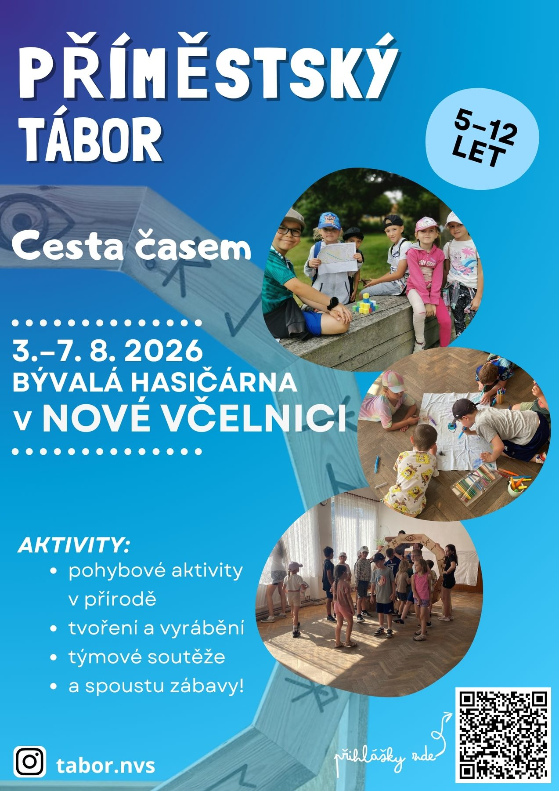

01
Tábor č. 1 Nová Včelnice
Cesta časem
Nastupte do stroje času. Čeká nás výprava napříč staletími, kde každý den otevře dveře do jiného světa.
- Termín
- 3.–7. srpna 2026
- Místo
- Bývalá hasičárna, Nová Včelnice
- Věk
- 5–12 let
- Cena
- 2 900 Kč